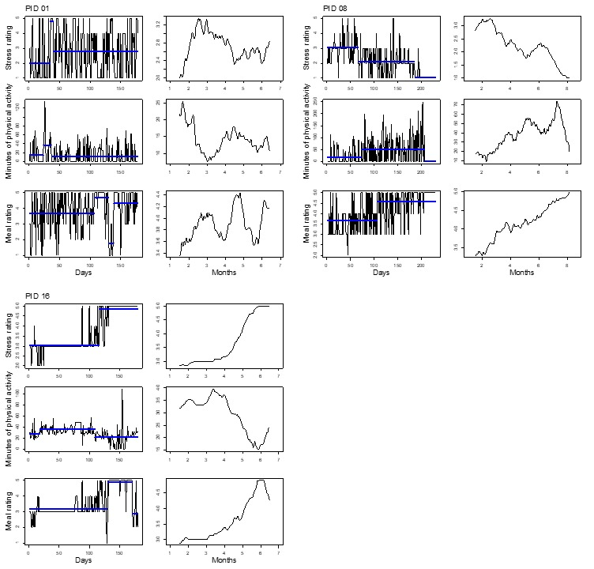
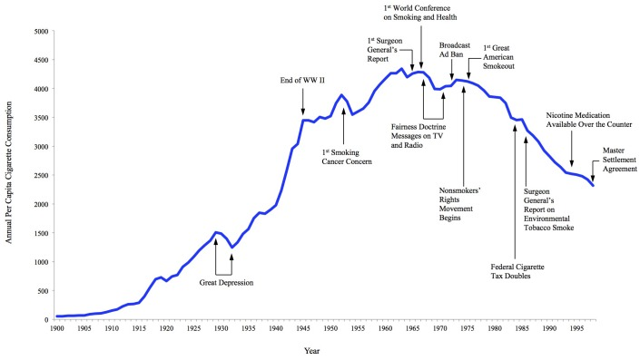

Longitudinal timeline
About
A longitudinal timeline visualizes how a user's behavior, needs, or relationship with a product evolves over an extended period — weeks, months, or even years — rather than within a single session or task. Built from diary studies, repeated interviews, or longitudinal analytics, it plots changing states across time, exposing onboarding ramps, habit formation, plateaus, drop-off points, and shifting needs as a person moves from novice to committed user (or disengages). Where a journey map captures one experience arc, a longitudinal timeline captures change itself — the slow trajectory that no single session can reveal.
When to use
Use a longitudinal timeline when adoption, retention, habit formation, or maturing needs are central to the design question — subscription products, learning tools, health-behavior change, or anything where the relationship deepens or decays over time. It pairs naturally with diary studies and longitudinal research, giving their findings a shape that stakeholders can read at a glance.
When not to use
Do not use a longitudinal timeline for single-session task flows — a journey map communicates those more clearly. It also requires genuine longitudinal data; never infer a multi-month arc from one-time interviews, as the resulting curve would be fiction dressed as evidence.
References
Examples
Click any example to view full size and visit the original source.

